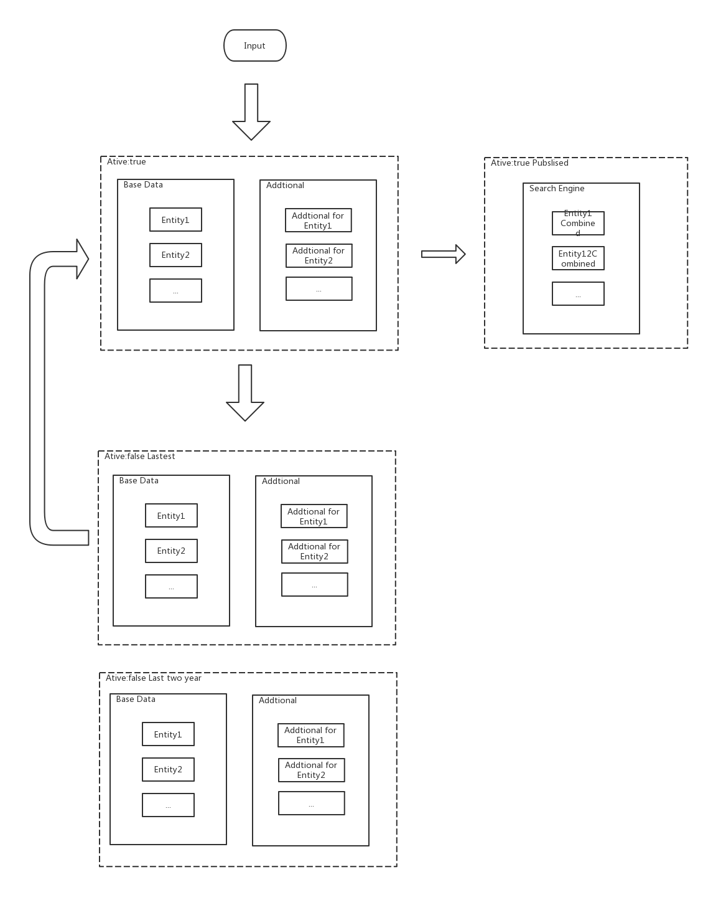

基于版本的文档管理 Doc version management
该设计基于关系型数据库，在Elasticsearch或Solr等搜索引擎中，只存储最新记录。
基本概念
以一篇文章为例，同一篇文章可以存在多个活动版本（is_active:true）:当前已发布版本（published），草稿（draft），审核中版本（pending），以及众多的历史版本（is_active:false）。因为不同版本的活跃程度不一样，通常情况下将不活跃的数据与活跃数据，进行分离，以减少在活跃数据时，对系统资源的消耗。也能在一定程度上隔离误操作对数据的影响。具体实施方式可以是将活跃数据和不活跃数据进行分表或是分库操作。甚至在一数据量大的金融系统中，会将不活跃数据，分成冷/热数据。即将最近的一批不活跃数据装载进 DB 中，将老的一般两三年之前的不活跃数据以硬盘或者光盘形式，做永久保存，在有需要的时候才加载到系统中。
“实体id”与“文档唯一id”
比如在数据表 organizaiton 和 person 中，以doc_id表示
实体id，以id表示文档唯一id。
基本字段和推算字段
因为文档历史版本的核心作用是，可以记录下用户手动修改的数据的一些历史轨迹，以便追随活动和还原数据，其中由用户输入的数据比较能体现上述作用，所以当一个文档拥有很多字段的时候，可以对改文档字段来源进行分类，分为
基本字段和推算字段。推算字段可以包含很多冗余数据，虽然和 DB 设计的 ACID 原则有冲突，但这是当搜索引擎在一些关系型搜索需求不能得到满足时候的保障。
活动数据与历史数据分离和历史数据切割

数据更新方式
保留每一个历史版本
一般情况下，当有新版本文档生成时，直接将当前版本的 doc 和其他关联信息（在其他table中）的状态的 is_active 设置为 false，insert 到 history 表（或库）中，再生成一条新的doc（附带新的唯一id）和其他关联信息（在其他table中），新doc继承原“实体id”(doc_id)。
不生成历史版本的情况
当同一个用户连续对同一份文档进行相同状态保存时，可以使用直接 update table 的方式，直接更新数据库中的本条记录，以减少一些无用版本的产生。比如，一个editor连续保存一个文档为 pending 状态，或者由我们系统在改变了一些数据计算逻辑之后，由系统账号连续保存的不同版本。尤其是后者，在业务迭代快的时候，可能会产生很多没有意义的历史版本。